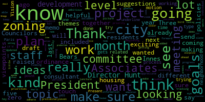
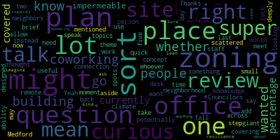
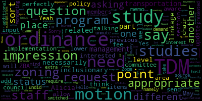

[Bears]: Medford City Council Planning and Permitting Committee, April 10th, 2024. Mr. Clerk, please call the roll.
[SPEAKER_04]: Councilor Kellogg. Present. Vice President Collins.
[Collins]: Present.
[SPEAKER_04]: Councilor Levin. Councilor Scarpelli. Councilor Beresford.
[Bears]: Present. For present one absent, the meeting is called to order. This meeting will take place at 6 p.m. City Council Chambers, second floor, Medford City Hall, 85 George B. Hassett Drive, Medford MA, and via Zoom. To submit written comments, please email adamherdevese at medford-ma.gov. The action discussion item for today is 24.033, offered by President Bears and Vice President Collins, which is the zoning ordinance updates with the Innes Associates team. So welcome, everybody. This is our second, third, I can't even, a third meeting, I think so far on the zoning project. I am sitting in his chair today because we do not have Councilor Collins and Leming are on Zoom, so I'm chairing from the podium, but they are here. Via Zoom, we received a memorandum as requested from NS Associates around the zoning project that we are working on, which is our comprehensive zoning update to align our zoning ordinance with the comprehensive plan, climate action and adaptation plan, open space and bike plan, housing production plan, and did I forget any other plans? So all of those plans had gone through years of public process, public meetings, charretting, surveying of the public, and those plans can be found on the city website and at city hall. and that's also this is a follow-up to the 2020 to 2022 project that this council did to recodify the city's zoning ordinance for the first time in 60 years and create a more readable and accessible format. I think a quick summary before we dive into the memo and we have Paula from Innes Associates who's going to go through it. Um, but basically so far we have met in this committee, uh, after bringing on in this associates through a bid process last fall, we've met in this committee to discuss the outlines of our project. We've generally grouped, uh, we're going to group our zoning changes into three phases. Phase one are items that we can do between now and June 30th of 2024. And these are simpler changes, fixes, technical corrections. to the zoning ordinance recommendations from our planning staff, building commissioner and building department staff, the zoning board of appeals, community development board, to identify issues in the zoning and correct them. Phase two, which will be starting before June 30th, but probably won't be coming to the city council until after June 30th, are some potential changes that require more analysis or research. And then phase 3, which will begin in July, are changes driven by what's been accomplished in the first two phases, and that'll be continuing through the end of 2024, likely through June and even September of 2025. and we've identified 10 topic areas that we will be grouping these under, and they are climate resiliency, housing production, housing affordability, addressing our major squares, mixed-use corridors, streets and neighborhoods, economic development and business growth, the zoning map and zoning districts, zoning uses and dimensional requirements, and transportation and multimodal ways. So that is a general summary of how we got here, where we'll be going, and I will turn it over to Paula from Innes Associates, who can go through the memo that we received last week.
[Ramos-Martinez]: Hi, good morning, everyone. So I will be covering today for Emily Innis, the director of Innes Associates. she couldn't join today. And I will try to answer all your questions as much as possible. But if I don't know something, I will pass on her and I will let you know as soon as possible. So I will share the document. I will share my screen. Can you see my screen?
[Bears]: Yes, we can.
[Ramos-Martinez]: One second. So Emily prepared this memorandum. Basically, she starts with the timeline. that was already explained. We will divide it in phase 1, phase 2 and phase 3. Basically, phase 1, as you said, as you mentioned, it will be between now and June 30th. These are the simple changes that are already known and that do not require the additional research. Phase 2 can be started before June 30th but won't be addressed after. This includes potential changes and that require certain analysis or research and phase three will begin in July and some will be completed by the end of 2024 and June 2025. And these changes will likely come from phase one and phase two, things that needed to be addressed that we haven't addressed at the moment. After that, we have the topics. We have the identified top 10 topics that were already mentioned. You can see them on this list, and then also the phases that these topics will be addressed. Some of these topics that are at the moment not addressed will be in a general category. so that we can also have some issues that cannot enter or be categorised in these ones, we will have a general category to have them as well. What we want to do in the memoranda is also track the topics and the actions to ensure that each of them are being addressed during this process and how is the status. of this. So, we will see later on an example of this updated status that we will see. We also have the policies. In policies, we will be discussing the developing policies for zoning topics and to guide the direction of the investigation, the development of the draft zoning language, etc. These policy statements will be developed in phases one and second. We have an initial list that can be actually developed from the recommendations that are already in the comprehensive plan. And at the end of the memorandum, we have a list of those potential initial policies. In phase one, some of the initial proposed changes are mentioned in here that are classified a bit in general. So, some global actions, for example, the check of pronouns, some of the defined terms if needed to be more adequate in bold or underlined or capitalized. these kind of more global corrections, some of the definitions. And so in here, I don't know if you want me to go to each of this, let me know if you want me to go faster. But at the moment, these are the ones that are being categorised and that have been identified. So, for example, move definitions that were added back in September into definition sections or leave them in specific zoning areas. Eliminate class A and class B distinctions for dwelling and multiple. Replace the word family with household. Remove the definition for family and add the definition for household. Rename coverage of lot to lot coverage and add accessory buildings. Replace drive-in eating places with eating place drive-through. Revise definitions of a special permit by adding the community development board to the definition and whatever SPGAs are mentioned. Separate use accessory and structure accessory from definition of accessory and check for consistent use throughout the document. our definition for setbacks, as well as for institution, institutional use, mixed use, coffee, coffee shop, and then about the hours of operation to be moved into the general ordinance. About site plan review topics address the following categories of site plan review, the municipal, administrative, minor, major, And then in uses and dimensional requirements about the table of uses to be at coffee shops, at mixed-use building, replace parking codes with spaces per surface requirement. Mixed-use building established uses allowed on a ground level. So these are the ones that are being identified and are placed on the memorandum. Yes, Kit Collins. Sorry, you raised hand.
[Bears]: Vice President Collins. Vice President Collins, your hands raised on Zoom. Paula, you can keep going. We'll come back to Vice President Collins. Councilor Callahan, sorry.
[Callahan]: Is this the right moment for questions?
[Bears]: I think we should go through it and then, if that's OK, finish the memo and then jump back in. So we can go through the rest of the memo. I don't think you need to read everything, Paula, but just give us a general summary of each section and what it means, I think, should be sufficient for me.
[Ramos-Martinez]: So then we have this status of updates. This is what I meant by this is something that will be going along with the memorandum and will be revised. So, here we will have all the address, different topics and exercises that we will be doing and then this is just a representation of what it could be. So, having all the different actions that we are doing, what is the topic, who is going to be addressing this, and then what phase are we in or should be developed in and the status of each of these tasks. The general topics again and these are the appendix the list of objectives and actions tied to zoning changes. These are what we talked about before about the policies coming from the comprehensive plan of Medford and these are the themes that are identified as important. The welcoming and supporting neighbourhoods, the vibrant places, the access for all and about climate resilience. And this will be all. I hope I can answer your questions.
[Bears]: Great. Thank you, Paula. I think this is a great roadmap getting us going. And I appreciate the comprehensive plan references in here, as well, as someone who wrote, I think, a nine-page comment on the draft comprehensive plan. I will turn over to Councilors for questions. I saw Councilor Callahan, and then I will jump back to Vice President Collins. Councilor Callahan.
[Callahan]: I did just have a question about the site plan review topics. This is just my lack of knowledge about this. Is there a super brief? What is that covering?
[Bears]: Thank you, Councilor Callahan. I think the question is just under the site of interview topics that mentions Dover Municipal, Administrative, Minor, and Major. I can just quickly say that Dover Municipal is a Dover amendment uses, so exempt non-profits, Tufts University is our biggest one, who have different zoning requirements than most other owners of property as well as municipal uses. The rest of them, I think, maybe a little bit more subjective in terms of, or maybe up to us for how to define what is minor, what is major, and I'm not quite sure on administrative, so I will let Paula or we also have Director Hunt in the room. kind of try to define those a little further. And maybe the point of this is that we need to define them a little further.
[Callahan]: If I may, we could take one step back and say like site plan review, like what?
[Bears]: Oh, sure. Yeah. Thank you. I'll go to Director Hunt on that one as the new age running of all site plan review.
[Hunt]: All right, Alicia Hunt, Director of Planning, Development and Sustainability. People in the room know me. I don't actually know who's on Zoom. Site plan review is, typically for major projects, and it is where the Community Development Board, which is Medford's planning board, most communities have a planning board, ours is called the Community Development Board, takes a look at the large projects and reviews them. Typically a site plan review cannot result in a denial of a project unless the applicant refuses to work, refuses to provide the information they need to do that, to do the review. But a site plan review will look at open space, circulation, parking, bicycle parking, architectural elements of the building, the look and feel of the building, In order to do site plan review, the staff to the CD board, which is staff in my office, will send the filing to a number of department heads in the city, including the city engineer, the director of health, the fire chief, conservation commission, historic commission, plus traffic and engineering or traffic under the city engineer and DPW. water and sewer. And all of those department heads and departments have the opportunity to comment on the site plan review and to request changes to see what they would like to see. And then I would frame it in that the CD board then works in negotiation with the developer to meet those things. There are certain things where the fire chief will just say, This is life safety. I want this. There are other things where they would say, well, I would prefer another fire hydrant. It's not required, but here's what I'd like to see. That's perhaps the easiest. The same with the health department has things that they'll require. And then they'll say, we also would like to see where you're going to put your dumpsters and how you're going to handle trash removal on this property. Um, so all of these boards and commission or all of these departments will feed all of this information to the planning staff planning staff, um Synthesize it And then work with the developer to see what they can meet what's reasonable And it's sort of to the seat between the board and the developer to say What do we need you to do in order to get your permits? um The site plan review may be informing the special permit of the City Council or it may be informing the Zoning Board of Appeals special variances, in which case it can be advisory to them. This is what we think. These are the conditions we believe you should put on this project. There could also be a site plan review special permit. where the cd board then offers the permit that'll typically happen in a case where the project is as of right they're allowed to do this project under zoning but the city still has some say in the details that is happening part of why this if that's clear i'm wondering if it would be helpful to talk about why dover and municipal are on this list sure and if i just may i think just a quick summary of
[Bears]: The generals on the three three ish processes and then you can get we can get into the details but essentially uses can allow we can allow by the zoning property owners to do something by right which basically means they just have to get a building permit. It's by right they don't have to go through further process. We can do you know their site plan review for certain there's a threshold at which site plan review applies and there's this process. And then there's also things that are only allowed by special permit, which is. almost always include site plan review to my knowledge, but also there is a conditionality of yes or no or yes with conditions. So those are kind of the three big buckets. We can get into variances and appeals and zoning more about those, but I don't. So that's kind of the three things. And then these would be within that site plan review and it would apply both for that middle threshold and to then site plan review for special permits is my understanding.
[Hunt]: Right, so one of the reasons these are on this list is the way the zoning code was re... So then there are Dover uses. Dover is protected by a state law, or the case law was actually established here, Medford versus Tufts, I forget the details of that. But it is state law that educational uses are protected as well as basically childcare, daycares, large daycares, not home daycares are protected use and schools are protected use. So the city, they're not subject to the city's zoning by state law. However, they can be subject to site plan review, which makes sense. You have a new school coming in, Tufts has a new building coming in. We should be looking at all of these things, but we can't say no, but we can engage in a negotiation to get it to a good place. The way the zoning was rewritten, it said that everything that Tufts did, if it wasn't 100% as of right, meant that it had to go to a site plan review, which you might imagine is a big project. So we have had, for example, Tufts wanted to put a I want to say, I think, an 8-foot fence around the lacrosse courts because the neighbors were asking for it instead of a 6-foot. It wasn't allowed as of right. But it did not need that kind of a process. There is no exception in there for us to say, administratively, that should be allowed. It literally, under the language of our current zoning, had to go through the big process. So what we want, one of the recommendations is that in our zoning we have categories of major projects and minor. Major projects by definition go through site plan review, no matter what. It's a new, it's a building over a certain size, it's a gas station, it always goes through site plan review. So what we want to look at is if it's a Dover project, And it's a major project that you go through site plan review. If it's a minor project, then there should be some administrative threshold that the planning office can look at it, can say, yes, it's not allowed by zoning, but this does not need to go to site plan review. It's a Dover protected use. Therefore, we can't say no. So that's sort of what we need to, because this has become an administrative nightmare for my office and Tufts to have every little thing they want to do, technically supposed to go through site plan. We've also, it's come to our attention that most municipalities in Massachusetts, municipal buildings do not, zoning doesn't apply to them. and they're exempt from zoning. That's not true in Medford. It's kind of a hassle. It doesn't quite make sense because a library, a city hall, a fire station is not a commercial building. It's not like our other kinds of buildings. And so we would like to put something in place that says municipal buildings that are not as of right, that are not compliant with zoning, either need to go through site plan review or again are minor and can be approved administratively because it's a different type of thing. So that's why those two are on the list. And then we need to just relook at what is major definition and what is minor and make sure that those are still making sense. We've had some, every medical facility is technically major and has to go through site plan review.
[Bears]: Yeah, right now 94, 11.7 defined site plan review. Anything residential over six units, including conversions, non residential over 10,000 square feet or adding more than 10,000 square feet. Any parking lot, including municipal lots, not accessory to principle uses projects involving a change in principle use of a building containing more than 10,000 square feet. Any drive through restaurant. any eating place that's not a drive-through that's more than 5,000 square feet, medical offices over 10,000 square feet, gas stations, and any neighborhood and convenience retail sales.
[Hunt]: Right. So we should be looking at those. But the municipal and the Dover requiring the minor projects to go through site plan review has become quite an administrative frustration. And it costs a lot of money, right, to prepare all those documents and have the lawyers and the engineers and everybody come for it, so.
[Bears]: Thank you. Any further questions, Councilor Calhoun? Great. I will go to Councilor Leming and then Council Vice President Collins. If you have a question, just raise your hand. Councilor Leming.
[Leming]: Hello. Sorry, I switched from one Zoom source to another. So I undid my co-host status here. So I can't unmute myself. But the only question I had that came to mind was, for each of these different sections presented, how many additional studies would need to would need to take place. I'm asking that because my to sort of because some of my areas of interest namely the transportation demand management would require an extra study. So I'm just wondering if another consultant would need to be hired for any other part of this presentation to to be possible.
[Bears]: Go to Director Hutt or Paula. How about a director hug?
[Hunt]: Sure. So trying to think of, trying to be concise. The short-term ones, they don't need studies. That's why they're short-term. I think that goes without saying. That's the things we can do between now and June. A little bit of research maybe, but no studies. Some of the bigger questions are things that we do think we want to have somebody else look at. And what is useful for people to know is that our economic development director and I already have that. We're kicking that off. So we have received funding in the past to do an economic development study and assessment in West Medford. and one in the Wellington area. We have had some, between the staffing shortages, which are now fixed, and putting some stuff out to bid and not getting any proposals back, which is what happened with the Wellington one, things have gotten slowed down that we had hoped were, I was hoping to do these last year. But we are also aware, Director DeStefano brought to my attention an organization called the Donahue Institute. which is out of UMass Amherst, that does a lot of economic development research and economic research and work with municipalities. They're similar in style to the Collins Center out of UMass Boston, but they're focused in this more of a planning economic development world. So we're actually in talks with them to do a SWOT analysis of the city, strengths, weaknesses study, as well as to, could we use some of this grant money to hire them to start to do this looking at these targeted areas. So those are ones that are already not only on our mind as studies to do, we have some funding for the consultants and we think we have a path forward that is not cost prohibitively expensive. Those are the ones off the top of my head.
[Bears]: I think that just to add to Councilor Leming, the key three ones for some of the elements of this project that have been suggested are the inclusionary, the transportation, the TDM study, and then the linkage nexus. So wondering on those three.
[Hunt]: Right. So I also have somewhat of an update on, so the linkage study question, I have asked our housing planner to sort of take that on and start moving that forward. And she has started talking to some potential firms. I think that, What we've been able to clarify for us is that Medford's linkage is what every other community would call an impact fee. And impact fees are not legal in Massachusetts except in Medford because of our special acts of the legislature in the 80s. Therefore, when we talk to other communities about linkage studies, they're talking about affordable housing connections and, in some cases, jobs creation, where ours are different. They're fundamentally different. So we are talking to a firm out of Maryland who's been doing impact fee assessed studies all over the country. There is a firm here that some other communities locally have referred us to. And then we were also going to actually talk to the Donahue Institute. about this as they know Massachusetts and they're willing to take on more unusual things. We are gonna have to identify the funding source for that study, but we'll cross that road when we have some idea of what it's actually gonna cost.
[Hunt]: And then on the inclusionary and I've wondered if we can lump inclusionary housing in with the linkage fee because our linkage legislation actually opens the door for us to have a bucket for affordable housing. And so are you in making a developer add affordable units, which is inclusionary housing, or are you having them pay money into your affordable housing trust, which would be linkage, or a little of both? I don't think you can separate those two studies. I think that they have to be done the same so that you can then come out with a recommendation as to how that should play out in the end. At least that's my assumption, and that's what the staff are going to be talking to the consultants about. two of those conversations are happening this week, in case you're wondering about timelines.
[Bears]: Great. Yeah, I think just, and I'll go back to Councilor Leming in just a second, but given the timelines that we're laying out here, if we're not relatively secure by early mid-fall on getting those studies funded and completed, then we're probably running out the clock, or at least going pretty late into next fall. So just want to flag that timeline.
[Hunt]: Yeah, we, our hope is to get the Donahue Institute under contract with some of my end of year budget money. I still have some money left that's unspent, uncommitted to start with that. And then look at some of funding out of my next year's budget to pay for some of So for the SWOT analysis would be smaller amounts of money that would come out of our budget. And then we have a earmark thanks to Senator Jalen for the West Medford area that we just haven't had the time to get moving that we'll use. And then we have gaming commission money and that wasn't enough, but in this new round of gaming commission grants, we have asked for additional money for the Wellington area study. based on the fact that we went out to bid, and we were basically told, you're underfunding this, nobody will do it for what you're willing to pay right now.
[Bears]: And maybe, can we look at Community One Stop, maybe? Yes. Okay.
[Hunt]: One Stop is on the radar. I know that Director DeStefano is meeting with MAPC staff and our city engineer. early next week to discuss one stop grants that are going in. And I know we put in some expression of interest. His area of expertise, by the way, is in fact, mass development and mass development funding. He knows it extremely well. Just as an aside, we have a minute. This is a relevant update. We may need some changing zoning changes for the RFP of the lots here in Medford Square. But one of the things that I've wanted is a consultant to help with that. He was able to convince Mass Development to give us technical assistance. So basically somebody that was on their list of consultants, they recommended somebody, don't laugh too hard, it was Emily Innes. Um, so she is now helping us as well with the RFP for these parcels. Um, so it'll very easily get folded in if we need any zoning changes. Um, but that kind of like going to mass development and getting technical assistance sort of also out of out of cycle for mass from the one stops is something he knows how to do and access.
[Bears]: I'm gonna go back to Councilor Leming.
[Leming]: Thank you. My initial question was related to the inclusionary zoning and whether it could be lumped in with the nexus study for the linkage fees, but I believe that Alicia just answered that. My other question was related to the TDM study, which is more of a hypothetical at this point because I don't think any any like solid movement has been made on staff to get that through. But does that necessarily, does the TDM study necessarily need to be done before the ordinance itself is put in place? Because my impression is that just from reading over the TDM ordinances and other municipalities, as well as the staff level implementation of the program, that the ordinances not quite as heavily dependent on the contents of the study itself as the as inclusionary zoning might be.
[Hunt]: I would say so the the question about the TDM transportation demand management is not my area of expertise, and I haven't had a chance to look into it. I might ask if Paula or anybody on their team can provide more advice on that, and what level of study is needed, because there's different levels. We already, in site plan review, ask for TDM type things. We don't have a Medford TDM, Transportation Demand Management Association, So I honestly I'm not I haven't even really had a chance to read the draft ordinance.
[Bears]: Is there a draft ordinance or is there just a draft language of some kind to be incorporated into this process? I'll go to Paula in a second. I know Councilor Leming has that Mystic Valley TDM group would be interested in that. So I'm going to go to Paul.
[Hunt]: And I guess part of what I want to just throw in as a question to Paul is, I'm unclear why we need an ordinance, right? Like, I don't quite get what that is, because we can already say through site plan review, we want you to participate in the Mystic Valley Transportation Management Association. So that's why I'm sort of asking about the language in the ordinance, because I'm not quite understanding what the ordinance piece does.
[Bears]: I don't know if council, I mean, you want to clarify the proposal at all and then we can go to Paula.
[Leming]: Yeah. With TDM, my impression, and I should say that I'm perfectly aware that I've been asking your office to do a lot of different things. I was talking to Todd about TDM as well. My impression with the ordinance is that it's needed to specifically allow exceptions zoning variances without going through the ZBA and that's something because TDM does allow applicable projects to do that. It's just that. In order to sort of get past the ZBA, you would need it to say so in the ordinance. But the lower level staff implementation of this is actually where you start getting into the point system trade-off that's really the meat of any TDM program. And I will also say that I have spoken, we are talking with the lower Mystic Transportation Management Association. They are very interested in expanding to Medford, but they also have been aware since previous efforts in this have flopped that the ordinance part of the TDM program is very important to making it work in a particular area.
[Bears]: Got it. Thank you, Councilor Leming, and I'll go to Paula to talk any more about this element of the zoning project.
[Ramos-Martinez]: So about the TDM, I cannot give you an answer. I don't know at the moment. I can ask Emily, and if she has any knowledge, I will let you know via email. That's all I can say, sorry.
[Leming]: I can also say that I added most people to this, to the draft ordinance, if you're interested in looking over it.
[Ramos-Martinez]: Yeah.
[Bears]: Great, thank you both. Any further questions by members of the council on this memo, Councilor Callahan?
[Callahan]: Yeah, just a quick question. I mentioned this last time, and I'm just curious who would be the right person to talk to about potentially what it might mean to add a coworking as a zoning use. With the concept that instead of office, like office building is sort of the place that it might fall. And we might not want giant office buildings like scattered across Medford, but to allow like small coworking places that are designed as neighborhood connection spots and places where people can have one desk and meet their neighbors and go during the day now that we're sort of in a world of remote work. It is not something I've thought through super deeply, but I'm curious, aside from one or two Councilors, if there are staff people or whoever that I can talk to that know more about zoning that might have some ability to speak to whether it would be useful or whether there is no need
[Hunt]: Right, so I guess I would actually, I'll ask, we will ask Emily's team and we should put it on the list, because when I have physically seen co-working places that I've been aware of, they've looked like retail storefronts to me, and that's what they're using, so why wouldn't it be considered a retail storefront, why would it be classified differently, might actually be a question for the building commissioner, so It might be like if your building commission would say, well, no, that's an office. That's not retail. Therefore, it's not allowed in this area. It doesn't count as a storefront. Is that an activated storefront? The one in my parents' town in New York looks more like a cafe than anything else. With your table of uses, you can add any uses. We can add any uses we want to it. The question is, do you need to and at what point are you oversaturating it, right? Like you would never add a barber and hairdresser and services and like that just falls under services or personal services. I think it's a reasonable question to be asking. Um, and whether there's some definition of personal services that includes masseuse and, you know, the hairdresser and coworking, and maybe it's just a definitions expansion and clarification that we consider that to be part of it. Um, if I'm, I'm hoping that one of the reasons for having consultants is because they have experience with more communities, but it's a really new thing. So.
[Bears]: Yeah, and I just want to add to, and I'm just going to share screen really quickly. You know, we had sent out the call for folks to send in various items to, so I think it was to Alicia and Kit to connect with Emily. And that was, you know, to inform this memo. So we have some of them in here in the status updates, but I think the idea is that if there is any, If there's anything like that, an idea, something you want to put on the table as a Councilor to put under a proposed change, submit that through the process, and Alicia and I can clarify exactly who it needs to go to. That'll get it added into this table. Eventually, a lot of the comp plan and other plan updates will be added into this table and we'll kind of have a running. You know, every couple meetings, we'll get a new memo like this that says, here's this change. Here's where the phase it's in. Here's the status update. You know, it's out to legal counsel or, you know, doing research or whatever it might be. We're waiting to hear back from lower mystic transportation Management Association. Um, so that is kind of the intent here. Um, so if there are items and then I will also work with chair Collins to make sure that anything that was in the governing agenda that was kind of around this project gets referred in here and put into this table as well. Um, this is this is pretty much a first draft and I will go to vice president Collins.
[Collins]: Thank you, President Paris, and yes just to underline that point. That was the one of the motions from our last committee meeting on this topic was for Councilors to send any preliminary suggestions that they wanted to see included in this kind of bird's eye view demo of what we're going to do over the next year and a half. But this is certainly going to be an evolving document and I think that we can, President Bears and I, together with NS Associates Director Hunt and her staff, can work together to keep information flowing, you know, from individual Councilors through myself and Director Hunt to the zoning consultant to make sure that as new ideas are raised, that's getting added and, you know, looking out at this project, This is a we have an ambitious slate of topics and themes to work through between now and next summer and fall. And so I really appreciate having this benchmark for kind of the, the version number zero of this memo and looking forward to seeing how it's going to be. Updated in coming months I think it'd be really helpful for this committee, you know, with its five different viewpoints for the council with it seven different viewpoints for the residents for city staff to be able to say hey I raised this as a priority. A month ago six months ago where we at with this I think this will be really helpful for tracking progress. And just to just to color in that picture a little bit, you know, to, to adhere to my. our last committee meeting, I did send ahead some of my own priorities and suggestions to Director Hunt and Innes Associates for ideas that I'd like to see included at the juncture. It's exciting to see Innes Associates is already beginning to incorporate some of the really specific policies and goals from the comp plan, the housing production plan, the climate action and adaptation plan. into this memo, I know that that'll probably be fleshed out more we fleshing out that more with ideas from the governing agenda to make sure that everything that ought to be in here is in here and is on the to do list for myself and I already conveyed this to our zoning consultant, the email but just to mention it in the setting. Three of the role. projects that I want to make sure that we're aligning with as we get through this is making sure that the areas of the draft tree ordinance that touch zoning, want to make sure that we're working on those at the appropriate time, ditto the draft condo conversion ordinance, and as with a lot of our other things that are more on the level of like themes and goals as opposed to discrete projects and policies, making sure that we are, you know, prioritizing our complete streets and Vision Zero goals as we're working through the map and the districting processes and a lot of these layout, you know, kind of at the district court or a neighborhood level, I think, whether it's transit related use related. you know, where those goals, resiliency, housing, commercial development hit the road. We'll be looking at those in abstract and also at kind of at the neighborhood level. So all that to say, I think this is a structure that will greatly advantage us as we try to touch on all of this in the coming months. Thank you, Paula, for being here today.
[Bears]: Great, thank you, Vice President Collins. And, you know, I think just to echo that and add one thing, you know, if there are some of these buckets are going to be big and ideas are going to come up as we work through them. Some of them, I mean, if there's something really outside the box that we're definitely sure is going to need to get studied, I will say, knowing about that sooner than later, the more that I look through this, the more I'm like, oh, well, we have everything we're going to do with, you know, not necessarily in this list, but it feels like we're pretty booked up through September 2025. So that's, there's just a lot to do here and only so many funds and so much capacity. Councilor Callahan.
[Callahan]: Thanks. Just looking through theme five, the climate resilience. I just wanted some of these seem like they kind of lean towards this but I wanted to ask if there is currently or if there are plans to have sort of percentage of lots that can be covered by impermeable surfaces. I mean, I would imagine that is where it would go.
[Hunt]: Sorry, I missed part of that something impervious surfaces.
[Callahan]: Sure. Just wondering if there is anything currently in the zoning or if their plans to put in the zoning any sort of limits on the percentage of a lot of it. you know, amount of a lot in some way that is covered by impermeables.
[Hunt]: So that falls into the open space requirements that exist in our dimensional requirements. So our dimensional and it's part of like in the definitions, if you were to look at the definitions of open space, those have to be permeable. And I don't want to speak incorrectly without having the zoning, I should bring the book down with me. It is sometimes easier to have the actual book, but that part of how much permeable is in zoning as part of the open space requirements. generally. There are a couple of different categories, and that's part of what we actually need to clean up. So we'll need to look at more closely. The definitions of open space are something that's on there. We have something called usable open space, and the definition is bizarre and hard to calculate. So for example, we feel that the zoning should be clear and understandable, and that a reasonable person should be able to calculate the things that are in this. and understand what that is. So that's, for example, it's in there though. Yeah, I think that's. And so that would be for everything, not just if it's going through site plan review, because if it's going through site plan review, then you were in front of the planning board. I guess you wouldn't always assume that there are always progressive people who would like to see a lot of permeable green stuff in trees, but they are. We have to remember, as we edit zoning, that we're editing it for the future. It could be for the next 40 years. It's not set in stone. We can change it in five and three if we wanted to. But we have to be thinking, this hasn't been radically overhauled in 40 years. So is it framed in a way that it doesn't matter who's implementing it, that the right things are happening?
[Bears]: Great. Just want to go to the building commissioner who did submit some zoning change recommendations. Mr. Commissioner, if you want to go over any of the recommendations that you submitted to us for this meeting.
[Scott Vandewalle]: Yes, hi. I think most of the stuff, you know, I'm sorry, Building Commissioner Vandewall, most of the stuff that we tried to put on the list was the daily minutiae that we deal with in explaining things and interpreting things and enforcing things. And some of the stuff we learned in dealing with the ZBA and city council and things like that. You know, we talked about small lots and stuff like that, merger doctrine and things get into it. So it's not the big grand scheme stuff. It's all the little daily bugs that we run into, whether it's definitions and how to understanding fencing and height requirements and all that sort of stuff. really what it's about. Some of this is a little bit bigger than others, but questions just keep coming up every day.
[Bears]: Thank you, Mr. Commissioner. This is really helpful. And also, just in general, please let us know how we can best engage with you as we move through the process. We have, and this associates with the planning department, I'm sure that there's communication there that I don't know about among city staff, but if there's anything, any way that you wanna be involved in a different way than you are in this project, we really wanna engage the building department as kind of the front line of enforcing a lot of this zoning code and making sure that it is written in a way that can be interpreted by your team effectively.
[Scott Vandewalle]: And that's kind of our goal here is as we understand how this is constructed or reconstructed, we're in a better position to enforce it. So I certainly want to be involved as much as you feel comfortable with this so that when the day comes, it's written and approved and stuff and we have to exercise it every day at the front desk. I find if we can tell people where it came from, it always helps us explain it to them.
[Bears]: Great, thank you. And Director, maybe we could consider, maybe we could just follow up with Councilor Collins offline about that question. All right, any questions from members of the Council on what came in through the Building Commissioner? Just a minute, yes, and we'll go to public participation once Councilors are done. Seeing no questions for the building commissioner, I just wanted to say one more thing, which was to ask Director Hunt, from the CD board and the ZBA chairs or members, what's our best way, or when do we expect that they might be able to engage in a similar process of sharing a list like what the building department was able to share?
[Hunt]: Right, so I will say that at all of the, the ZBA and CD board meetings over the last six weeks. I have brought this up. I've mentioned this, I've asked for feedback and input. We've had suggestions that perhaps we could have Emily or one of her staff come to a special CD board meeting to have a conversation about that. Mostly because honestly, we've been mentioning this for months. And I have also offered to all the members that if any of them would rather do a one-on-one with either one of the staff or one of the consultants to like flush through their ideas, we're happy to do that as well. Nobody's taken me up on it yet. So I'm trying to get it on the agendas, but the agendas keep running super long. So that's kind of how we've been approaching it. They're very aware that this is happening, and we have asked them for input. Really what we need to do, I think, is to have the consultant come to the meeting. I'm actually going to share this memo with them. If I haven't already, for the life of me, I apologize. I don't think that I have actually sent it to the boards so that they can get an idea of, really, this is real. Like, let's get your list now.
[Bears]: Yeah, and if you want to throw in as an example, just, I mean, I think, you know, as a starting point, this quick list from building, it's just a couple of pages, but it's also like 25 really good things. So quick and good is always, I think, helpful for all of us. Any further questions from members of the council? Seeing none, I will open us up for public participation, and you can come to the podium or raise your hand on zoom name and address for the record, please.
[Gaston Fiore]: Thank you. I just had a question actually related to the permeable surfaces. So when I was part of me. I actually was very interested in using permeable material on sidewalks. I got in contact with City of Somerville, and then also with our directors of DPW, and I believe he was actually running some sort of pilot on that. So I was just wondering whether that would also be part of zoning, or how it would work to have permeable materials, maybe not in all of the sidewalk, but at least in areas around trees, which is what I have seen. So I don't know what Director Hunto You know that?
[Bears]: Yeah, I could just say that for the scope of this project, and depending on what happens with the municipal uses and site plan review, like the public ways, when zoning doesn't apply to the public ways, the public ways are controlled by different state laws and ordinances. So this is mostly about regulations of private property through the zoning code. But I will defer to Director Hunt, who may have more knowledge than I do, generally does.
[Hunt]: Right, so we can control private development with this. Private development, when it's new and when it's developing, right, we can't use it to say to an existing building, we want you to change. If it is helpful though, the city engineer has promulgated new storm water regulations over the last, it's actually probably been actually two years now, and is very interested in pursuing additional ways to reduce permeable, impermeable, sorry. OK, permeable means water can go through it. Impermeable means water cannot go through it. It is very easy to misspeak because your brain doesn't want to say the negative, right? Like impermeable, right? So anyhow, I get it. The words come wrong out of my mouth on this one. There are other programs that could exist to encourage residents to remove asphalt and impermeable surfaces like stormwater fees, for example. that would be outside of zoning. But it is stuff that is on our city engineers radar, so he's a good place to go talk about it and look at it. And I do know that they have interest in the surrounds around the trees that are. permeable. One of the things we would do and we should do is confirm that in our zoning there isn't anything that prohibits those sorts of materials from being used. We do in site plan review try to encourage permeable materials for even driveways and parking lots. Parking lots are better for them. They're not great for very high frequency areas. They get worn down pretty easily. the difficulties if they're not maintained correctly they stop becoming being permeable and what is our level of confidence that the private owner is going to properly maintain it unless they want to do it and it is their idea. There could be some regulations around that but I would defer to the city engineer on those. Yeah, but I would mostly say that we should look at how would those surrounds be considered. If you've ever, a great place to see them that I know about, I assume what you're talking about, are the ones in Kendall Square. If you're over by the MIT Medical Center and the Kendall T-Stop, that area has a bunch of trees that are planted with this permeable right up around them. And actually, both our city engineer and DPW commissioner, when they were in private engineering practice, worked on that specific project. So they're both familiar with it. It helps.
[Bears]: Great.
[Gaston Fiore]: Any further questions, comments? Yeah, thank you. That was very informative. And the last thing I want to mention is that there's a very nice improvement on availability of information from the city council. So thank you very much for that compared to last year. I think it would be helpful, though, when the agendas for something like this gets posted. where there's the attachment, if there could at least be links to, for example, the current zoning ordinance, because here I was looking at home about this zoning change recommendations, and it says like 94.12.0 and 94.5.0, and then I'm assuming this is in the minicode. Yeah, it's on the minicode, yeah. Right, but I think, so thanks to you, President Perez, I think I can find all of this, but for other residents, for example, the Climate Action Adaptation Plan, the Comprehensive Plan, It was mentioned the Draft Tree Ordinance, the TDM Ordinance, the Condo Conversion Ordinance, and all of this. So I think for regular residents, you know, when they see all of this mentioned here, they could actually, where you place the agenda, where it says attachments, just even a link without including the PDF in all the agenda materials, even a link I think would be very helpful. So we can just click on that and say like, oh yeah, so I can go to section 94.12 of the zoning ordinance, click here, and then we should see it. So that's just my suggestion.
[Bears]: I will see what we can do there with our software. We could probably at least include a link to MuniCode itself in general. They might have to go searching for their specific section, but say this is the zoning ordinance and then the plans as well.
[Gaston Fiore]: Yeah, I think just even a link, even if it's not even clickable because it's a PDF, like I mean, I think it should be fine to put it clickable, but even if it's not clickable, so people can just copy paste and then they go to the ordinance and they, of course, they will have to change to look, search for their section. Yeah, but that's totally fine.
[Bears]: That's a great idea. I think we can throw that we might it might end up in the full text and description section rather than the attachment section because of how the software works. But yeah, that's perfect.
[Gaston Fiore]: That's a good idea. Thank you.
[Bears]: Any further comments by members of the public? Raise your hands on zoom or run down to the city council chambers in the next two minutes and we'll recognize you. All right, seeing none, are there any motions on the floor? I actually have one that I would ask a colleague to make if they will, but any further, any comments before, comments or motions before that? Vice President Collins.
[Collins]: Thank you, President Bears. This is a comment, not a motion, but I just wanted to reflect that I think this stage of the process kind of encapsulates a lot of what we're trying to do here which is both taking the visions and goals of the plans that we've the city is, you know, collaboratively created over the past three to five years, and putting those into a zoning code where they can actually be implemented and residents can start to see changes like the type they've been requesting for. you know, in some cases, decades, depending on the topic at hand. And at the same time, it's also a process that is meant to streamline how, you know, the work of the city gets done and how development gets done and make this a city where the type of development that we do want to be happening can happen more efficiently, more easily with less burden on city staff and also the people that are trying to build and work and contribute to our community. So it's great to see you know, both facets of many represented in this meeting. And thank everybody for their participation. This is going to be a long project, but it's exciting to be formulating how exactly, you know, we're going to try to roll out as much of this as possible. Thank you.
[Bears]: Thank you, Vice President Collins. And I just have two motions that I can't make as chair, so if anyone would like to make them for me, I'll just say what they are. Yeah, I'll do it. Thanks, Matt. It would just be the first motion would be to have the committee chair send around the request for input from members of the council for any policy items. Just send that around once again. And also, my second motion, and you can take it as one, whatever you want to do with it, Matt, would just be that we get an update from Planning and Development Sustainability by the end of June on the status of funding and procurement for the studies that we discussed today.
[Collins]: So moved.
[Leming]: Yep, so I would like to motion to have the committee chair send around the request for input from members of the council on any policy items combined with a request to get an update from the Department of Planning, Development and Sustainability by the end of June on the status of funding and procurement for these studies discussed, though. There was a previous motion that was passed that essentially asked for an update from them by May for the linkage fee study. So just wanted to point that out for the second one.
[Bears]: If you want to amend that to May, that's fine with me.
[Leming]: All right. And I will amend that to May. Although if Alicia doesn't think that that's feasible, I'm perfectly willing to hear feedback on that from her.
[Hunt]: Mr. Chair, President, I'm losing it on the titles tonight. My thought as I was hearing that motion was that we should be coordinating this more closely together and that I'd like to talk to Emily about actually including on her, because it's my understanding that this memo is a live document, and that things are going to get updated, and then the next, for two weeks from now, when this group meets again, there'll be an updated version of the memo. And that whenever this group meets, there'll be an updated version that'll track what's going on, particularly the table of where things stand. And so it seems to me that we should add these various studies to this table to track where does it stand, who's responsible for it, what's the timeline, so that it's all in one place. And so rather than saying, oh, I'm going to give you some separate report by a date, I would actually love to say, let's add them to this memo so that we can do regular check-ins and regular updates on where they stand. and that'll frankly move things along more quickly.
[Bears]: That sounds good to me. Councilor Luebing, how does that sound?
[Leming]: Yeah, that sounds good. So the appropriate motion instead be to add the appropriate studies to the memo?
[Bears]: Yeah. Okay. I'll jump in too, Paula.
[Ramos-Martinez]: I know that that was exactly what they're supposed to be, something that is updated and that it has continuously all the projects and all the studies within and so that it can be easily tracked who's doing what and at what phase and what is the status of it. So yes, absolutely.
[Bears]: Just a clarification on my end at least, I think it would be great if these studies were like in the same section, but maybe had their own table because I think there's an extra level of, you know, work we're going to need to do in terms of securing funding and etc. and work that's already being done by staff on that front.
[Leming]: Okay, so motion to have the committee chair send the request for input from members of the council on any policy items and to get in to add the appropriate studies with their own section to the memo of and associates.
[Bears]: There's no time anymore. It's just going to be adding it to the memo in perpetuity. On the motion of Councilor Leming, seconded by Councilor Callaghan. When you're ready, Mr. Clerk, please call the roll.
[SPEAKER_04]: Councilor Callaghan? Yes. Vice-President Collins? Yes. Councilor Leming? Yes. Councilor Stroud-Kelly is in absence. Councilor Farris?
[Bears]: Yes. We're in the affirmative, none of the negative, one absent. The motion passes. Any further discussion or motions on the floor?
[Leming]: Motion to adjourn.
[Bears]: On the motion of Councilor Leming to adjourn, seconded by Councilor Callahan. Mr. Clerk, when you're ready, please call the roll.
[SPEAKER_04]: Councilor Callahan? Yes.
[Leming]: Yes.
[SPEAKER_04]: Councilor Fleming.
[Leming]: Yes.
[SPEAKER_04]: Councilor Scopelli is absent, President Bears.
[Bears]: Yes, for the negative one absent, the motion passes and the meeting is adjourned. Thank you everybody.
|
total time: 16.19 minutes total words: 2738 |
total time: 4.61 minutes total words: 827  |
total time: 1.94 minutes total words: 326  |
total time: 4.88 minutes total words: 620  |
{kind=link}
{kind=link}
{kind=link}
{kind=link}